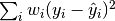
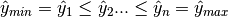
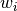
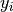

1.14. Isotonic regression¶
The class IsotonicRegression fits a non-decreasing function to data. It solves the following problem:
minimize 
subject to 
where each  is strictly positive and each  is an arbitrary real number. It yields the vector which is composed of non-decreasing elements the closest in terms of mean squared error. In practice this list of elements forms a function that is piecewise linear.